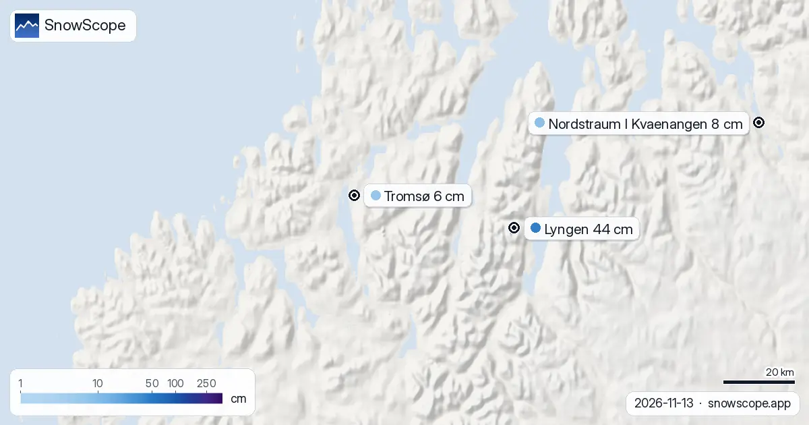

Snödjup i Tromsø: 6 cm i stan, 44 cm i Lyngenfjällen (13 november 2026)
Tromsø har ett tunt vitt täcke den här fredagen. Väderstationen på ön, 114 m upp i backen ovanför centrum, mätte 6 cm snö på fredagsmorgonen, ner från 8 cm i torsdags. Den riktiga snön ligger på andra sidan fjordarna: en station på 710 m i Lyngsalperna har 44 cm.
Se snöprognosen för Tromsø live i SnowScope-appenSnödjup, pudervarningar och 3D-kartan, gratis.Stad, fjordar och fjäll
Täcket i stan är nytt: i måndags hade stationen fortfarande barmark, sedan kom snön mitt i veckan och satte sig lite på fredagen. Längs kusten nordost om Tromsø har Nordstraum i Kvænangen 8 cm. Inåt land har Bardufoss bara 3 cm.
Högre upp är det en annan årstid. Gjerdvassbu i Lyngen, på 710 m, har haft ett djupt täcke hela veckan: 38 cm i måndags, 44 cm nu. På andra sidan gränsen har Kilpisjärvi i Finland, 100 km bort, 13 cm.

Ungefär normalt för Tromsø
Vår snöhistorik för Tromsø nära havsnivån omfattar 46 vintrar. Den 13 november låg det snö på marken i 32 av dem, och mittvärdet är 8 cm, med upp till runt 17 cm ett snörikt år. Dagens 6 cm, uppmätta lite högre upp, ligger mitt i det spannet.
De senaste vintrarna varierade det här datumet från barmark (2022-23 och förra vintern) till 12 cm 2023-24. Den 1 december är det normala runt 17 cm, i mitten av december runt 27 cm och i mitten av januari runt 50 cm.
Helgen: kylan kommer
Lördagen är torr och kall, med temperaturer mellan ungefär -11 °C och -4 °C beroende på prognos. Söndagen ger runt 2 cm nysnö och sedan mildare luft, nära noll. Måndagen förblir kring noll med lite snö. Det tunna täcket ligger kvar, och knarrar.
Tips för skidåkare
- Med 6 cm på marken och mörka eftermiddagar gör pannlampa och broddar en promenad i stan mycket lättare i helgen.
- Kör du ut från stan mot Lyngen går vägarna från blöta till isiga när du kommer högre.
- Innan du åker skidor i brant terräng i Lyngsalperna, läs lavinvarningen på Varsom: 44 cm på bar mark tidigt på säsongen är ingen stabil grund.
Fler kartor (externa webbplatser)
Referenser och källor
- MET Norway, free meteorological data (station reports) www.met.no/en/free-meteorological-data
- Ogimet, archive of the international SYNOP station reports (Norway, WMO block 01) www.ogimet.com/
- Open-Meteo, weather forecast data (ECMWF and ICON models) open-meteo.com/
Om siffrorna
Snödjup i dag: uppmätt vid väderstationer på morgonen den 13 november 2026 (MET Norges stationsrapporter i det internationella SYNOP-formatet). En station mäter snön på sin egen lilla yta, så några kilometer bort och hundra meter högre kan marken se annorlunda ut. Normalt snödjup för datumet: SnowScopes snöhistorik, 46 vintrar (1980-81 till 2025-26), en modell av det förflutna på stadens höjd, inte en stationsserie. Helgen: två vädermodeller (ECMWF IFS och DWD ICON via Open-Meteo), angivna som ett spann. Platser och regler: de officiella sidorna nedan.
Citera den här rapporten
För forskning, undervisning eller press: siffrorna och diagrammen får återanvändas fritt under CC BY 4.0 med den här källhänvisningen.
SnowScope (2026), Snödjup i Tromsø: 6 cm i stan, 44 cm i Lyngenfjällen (13 november 2026), https://snowscope.app/blog/sv/2026/11/tromso-snow-depth-13-november-2026.html, hämtad 2026-11-13
SnowScope (Atlas Labs). (2026, November 13). Snödjup i Tromsø: 6 cm i stan, 44 cm i Lyngenfjällen (13 november 2026). SnowScope snow reports. https://snowscope.app/blog/sv/2026/11/tromso-snow-depth-13-november-2026.html
BibTeX
@misc{snowscope2026tromsosnowdepth13novembe,
author = {{SnowScope (Atlas Labs)}},
title = {Snödjup i Tromsø: 6 cm i stan, 44 cm i Lyngenfjällen (13 november 2026)},
year = {2026},
month = nov,
howpublished = {\url{https://snowscope.app/blog/sv/2026/11/tromso-snow-depth-13-november-2026.html}},
note = {Published 2026-11-14 13:29 UTC; accessed 2026-11-13}
}· CC BY 4.0 · Metoder, data och verktyg →
Följ Tromsø
Gratis: ett meddelande när nysnö är på väg, och prognosen varje morgon.
Fler snörapporter

Snödjup i Myrkdalen i mitten av november 2026: Norges nationella snökarta visar runt 14 cm i backarna och 33 cm på 1 333 m; vår prognos ger ungefär 44 cm på toppen på sju dagar. 46 tidigare vintrar för slutet av november.

Snörapport för Lofsdalen i mitten av november 2026: stationen på Häggberget på 682 m mätte 6 cm den 12 november, dalstationerna 7 till 8 cm den 13 november; runt 7 cm till väntas utan regn, öppning 11 december, 46 tidigare vintrar.